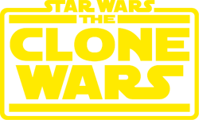
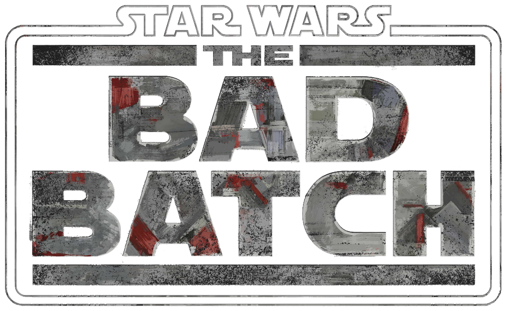
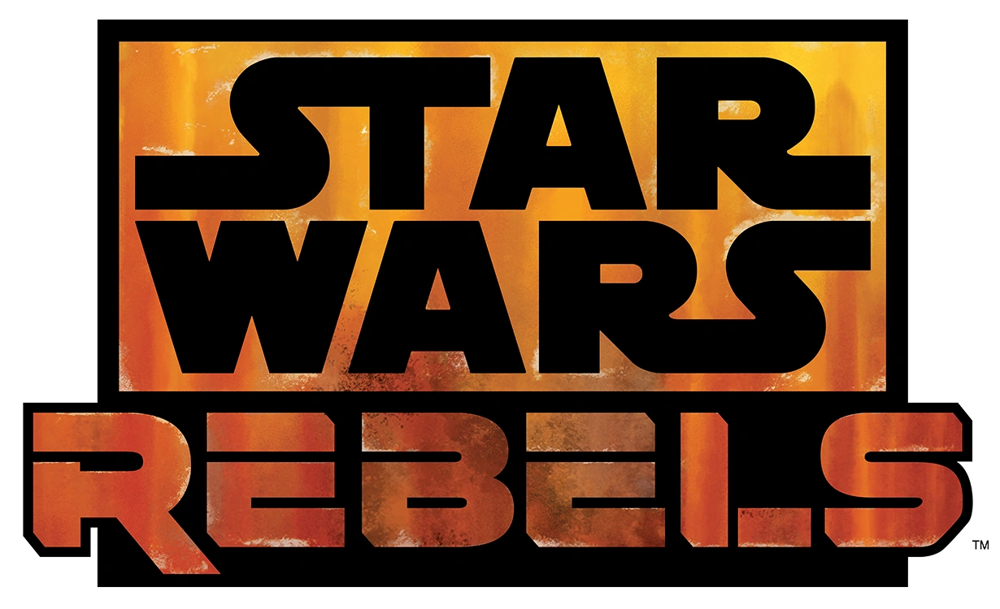
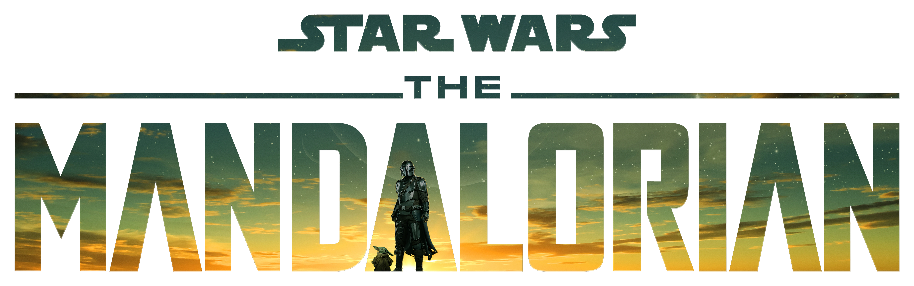
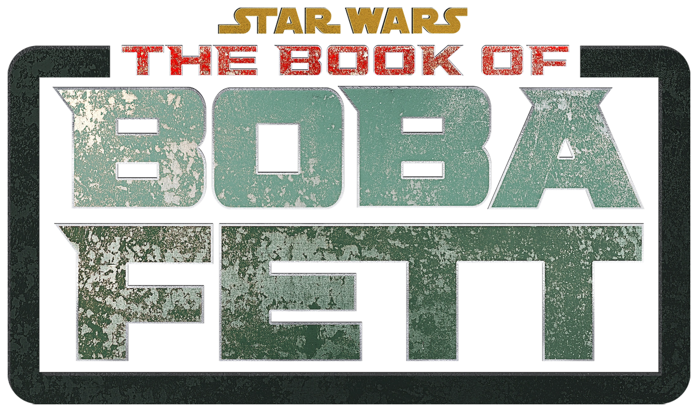
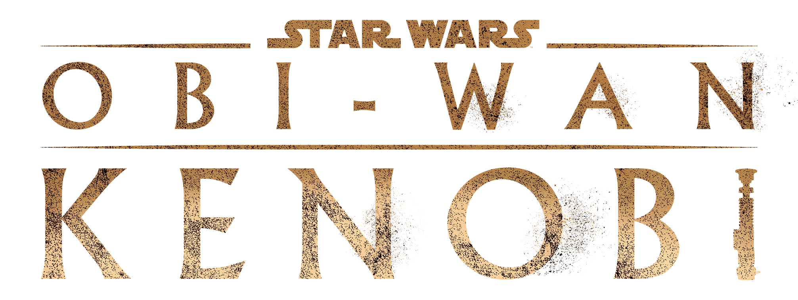
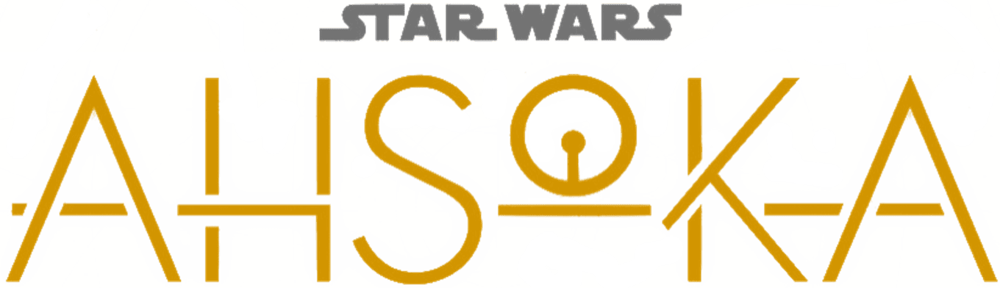
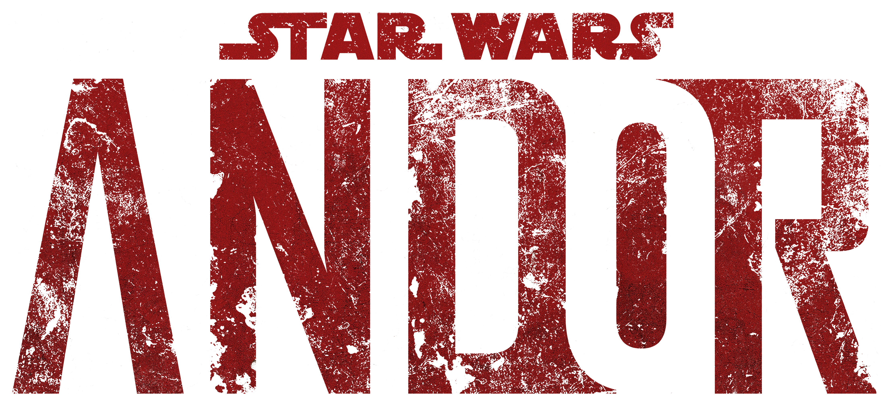

Tartalom:


Sorozatok
Star Wars The Clone Wars
A Star Wars: A klónok háborúja (eredeti cím: Star Wars: The Clone Wars) amerikai televíziós 3D-s számítógépes animációs sorozat a Lucasfilm Animation Ltd.
és szingapúri részlege, amely 2008-ban készült, valamint a CGCG Inc készítette. A sorozat sugárzása Amerikában 2008. október 3-án kezdődött az első két rész
bemutatásával a Cartoon Networkön. A kitalált Csillagok háborúja univerzumban játszódik, egy időben a 2003-as Klónok háborúja rajzfilmsorozattal. Minden
epizódja 22 perc hosszúságú. A Star Wars-t megalkotó George Lucas szerint több mint 100 részből fog állni. Dave Filoni, az Avatar: Az utolsó levegőidomár
egyik készítője a sorozat felügyelő rendezője. A sorozatot Magyarországon a Cartoon Network mutatta be 2009-ben, majd nem sokkal később az RTL Klub is műsorra
tűzte, azonban az új részeket először a Cartoon Networkön adják. Később az AXN is bemutatta a hatodik évadot országos premierként.

Bad Batch
A Star Wars: The Bad Batch 2021-ben bemutatásra kerülő amerikai televíziós 3D-s számítógépes animációs sorozat, amit a Lucasfilm Animation Ltd.
és szingapúri részlege, valamint a CGCG Inc készít. A sorozat sugárzásának bemutatója Amerikában 2021. május 4., az első, 71 perces résszel a Disney+-on.
A kitalált Csillagok háborúja univerzumban játszódik, A klónok háborúja története után. A sorozatot Dave Filoni készíti, a The Mandalorian,
A klónok háborúja, az Avatár – Aang legendája, a Lázadók, az Ellenállás és a A sors erői egyik készítője. Magyarországi bemutatója várhatóan 2021.
A sorozat a 99-es Klónerő elit és kísérleti katonáit követi nyomon, miközben egy gyorsan változó galaxisban kell megtalálják az útjukat a klónháború után.

Rebels
A Star Wars Rebels egy amerikai 3D-s animációs sci-fi televíziós sorozat , amelyet a
Lucasfilm Animation készített , és a Star Wars univerzumban játszódik. Több mint egy évtizeddel
a Star Wars: Episode III – A Sithek bosszúja (2005) után játszódik, és az eredeti Star Wars- film
(1977) eseményei felé halad. [a] A Galaktikus Birodalmat ábrázolja, amint az utolsó Jedikre
vadászik,miközben felbukkan a Birodalom elleni lázadás . A sorozat vizuális stílusát az eredeti
Star Wars- trilógia ihletteRalph McQuarrie koncepcióművészete . A sorozat új karaktereket
tartalmaz, valamint néhányat az eredeti trilógiából és az előző animációs sorozatból,
a Star Wars: The Clone Warsból (2008–2020). A sorozat négy évadot tartalmaz.

Mandalorian
A sorozat öt évvel A Jedi visszatér után veszi fel a fonalat, miután a Galaktikus Birodalom
szétesett. A sorozat Din Djarin, a magányos fejvadász útját követi a Külső-Peremvidéken.
Egy birodalmi felbérli, hogy szállítsa le neki Grogut, de ehelyett ő védelmébe veszi a gyermeket.
Miközben próbálja őt visszajuttatni fajtájához, Gideon moff üldözi, aki Grogu vérét akarja
felhasználni. A páros ezek után a Mandalórra utazik, hogy Din jóvátegye azt a szabályszegését,
hogy mások előtt levette sisakját.

Book of Boba Fet
A cselekmény két szálon fut: egy a "jelenben" (Y. u. 9-10), egy a múltban (Y. u. 4-9),
de vannak visszapillantások a klónháborúk idejére is. A múltbeli szál valójában Boba
Bacta-tartály-beli álmaként jelenik meg.

Kenobi
10 éve a Jediket a 66-os parancs megsemmisítette és Obi-Wan Kenobi tanítványa,
Anakin Skywalker lett a Sith Lord Darth Vader. Kenobi a Tatuin bolygón bujkál,
őrzi Anakin fiát, Luke-ot, amikor elhívják Anakin lányának, Leiának a megmentésére,
miután a Galaktikus Birodalom inkvizítorai elrabolják.

Ashoka
Ahsoka Tano kitalált szereplő a Csillagok háborúja univerzumában.
A mozifilm-sorozatban nem szerepel; főként az animációs Star Wars: A klónok háborúja c.
egész estés filmből és A klónok háborúja, illetve a Star Wars: Lázadók c. sorozatból közismert.

Andor
Az Andor 2022-ben bemutatott amerikai kalandsorozat, amit Tony Gilroy alkotott.
A Csillagok háborúja világában játszódik. Főbb szerepekben Diego Luna (mint a címszereplő, Andor),
Genevieve O'Reilly, Stellan Skarsgård, Adria Arjona, Fiona Shaw, Denise Gough és Kyle Soller látható.
A sorozat a Zsivány Egyes – Egy Star Wars-történet (2016) előzménye és a Star Wars: Lázadók című
sorozattal párhuzamosan játszódik.
